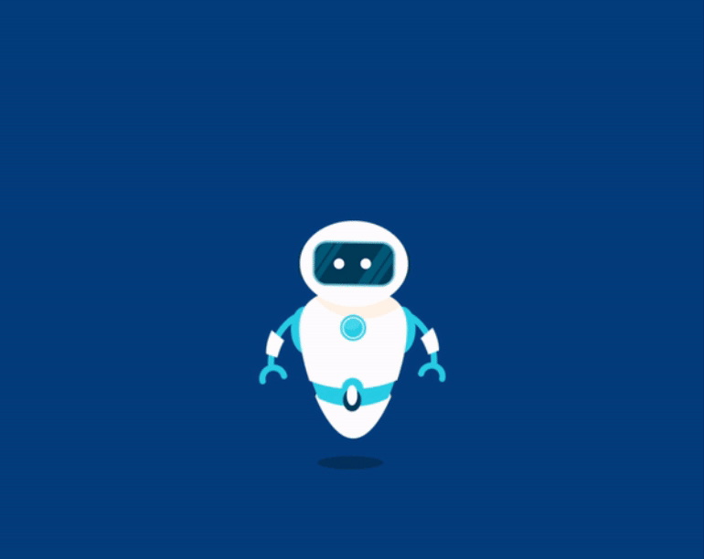

Cazuri frecvente de utilizare a roboților de chat

Chatbot-urile sunt o parte fundamentală a tehnologiilor de inteligență artificială (AI) de astăzi. Dacă aveți vreo conexiune la tehnologia modernă, ați întâlnit chatbot la un moment dat. Acestea sunt utilizate pentru o gamă largă de aplicații din industrii, inclusiv servicii bancare online, comerț cu amănuntul și comerț electronic, călătorii și ospitalitate, asistență medicală, media, educație și multe altele.
Un chatbot este un program de calculator care se bazează pe AI pentru a răspunde la întrebările clienților. Realizează acest lucru deținând baze de date masive de probleme și soluții, pe care le folosesc pentru a-și îmbunătăți continuu învățarea.
Există unele concepții greșite despre termenul robot de chat. Deși termenii robot de chat și robot sunt folosiți uneori interschimbabil, un robot este pur și simplu un program automat care poate fi folosit fie în scopuri legitime, fie în scopuri rău intenționate. Conotația negativă din jurul cuvântului robot se datorează istoriei privind hackerii, care utilizează programe automate pentru a se infiltra, a prelua controlul și pentru a provoca distrugeri în ecosistemul digital.

Prin urmare, roboții și roboții de chat nu trebuie confundați cu aceștia. În general, roboții de chat nu au un istoric de utilizare în scopuri de hacking. Roboții de chat sunt instrumente de conversație care efectuează eficient activitățile de rutină. Oamenii îi îndrăgesc deoarece îi ajută la parcurgerea rapidă a activităților, astfel încât să-și poată concentra atenția asupra unor activități de nivel mai înalt, mai strategice și mai interactive, care necesită capacități umane ce nu pot fi reproduse de mașinarii.